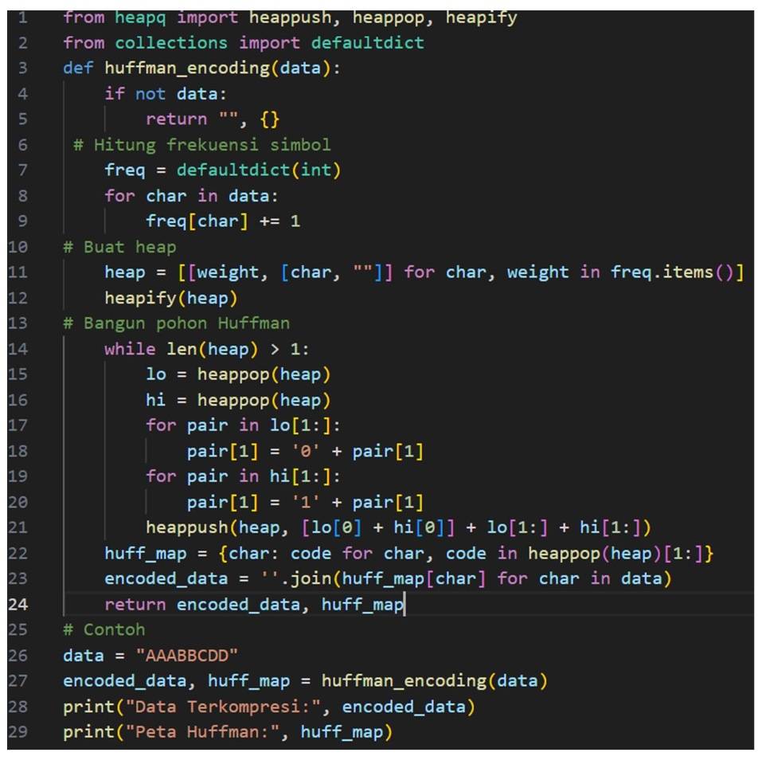
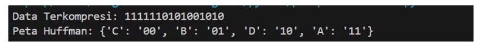
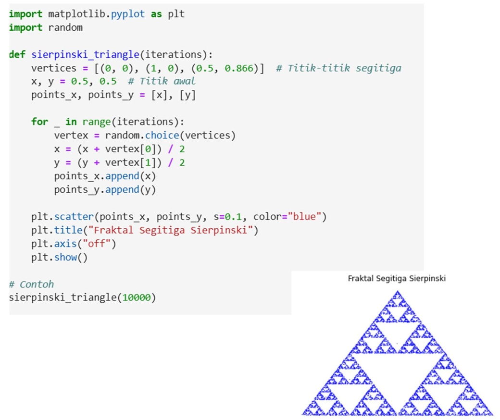

Pertemuan 12: PEMAMPATAN CITRA LANJUTAN
Materi ini membahas Pemampatan Citra Lanjutan dalam Pengolahan Citra Digital
Sub-Topik:
- Pemampatan Citra Huffman
- Run-Length Encoding (RLE)
- Lossy Compression Dengan DCT
Pemampatan Citra Huffman
Prinsip Kerja huffman adalah menggunakan frekuensi simbol untuk membuat kode panjang variabel. Simbol dengan frekuensi tinggi diberi kode pendek. Dengan langkah-Langkah menghitung frekuensi simbol, membangun pohon Huffman lalu metapkan kode biner untuk setiap simbol.
Contoh Penerapannya Pada Program
Gambar 12.1: Kode Implementasi Huffman
Gambar 12.2: Output Implementasi Huffman
Pemampatan Citra Kuantisasi
Prinsip Kerja kuantisasi adalah Menyederhanakan nilai pixel dengan mengelompokkan nilai intensitas. Dengan langkah-Langkah menentukan jumlah level kuantisasi, membagi rentang intensitas menjadi interval, lalu setiap nilai diubah ke nilai tengah interval.
Contoh Penerapannya Pada Program

Gambar 12.3: Kode Implementasi Kuantisasi

Gambar 12.4: Output Implementasi Kuantisasi
Pemampatan Citra Fraktal
Prinsip Kerja fraktal Menggunakan pola berulang untuk mengompresi data dan merepresentasikan pola-pola ini dengan transformasi matematika.Contohnya seperti pola sederhana seperti segitiga Sierpinski dapat direpresentasikan dengan transformasi fraktal dan sebuah gambar dengan pola berulang, seperti gambar kotak- kotak hitam putih, dapat direpresentasikan sebagai parameter transformasi sederhana.
Contoh Penerapannya Pada Program
Gambar 12.3: Kode & Output Implementasi Fraktal